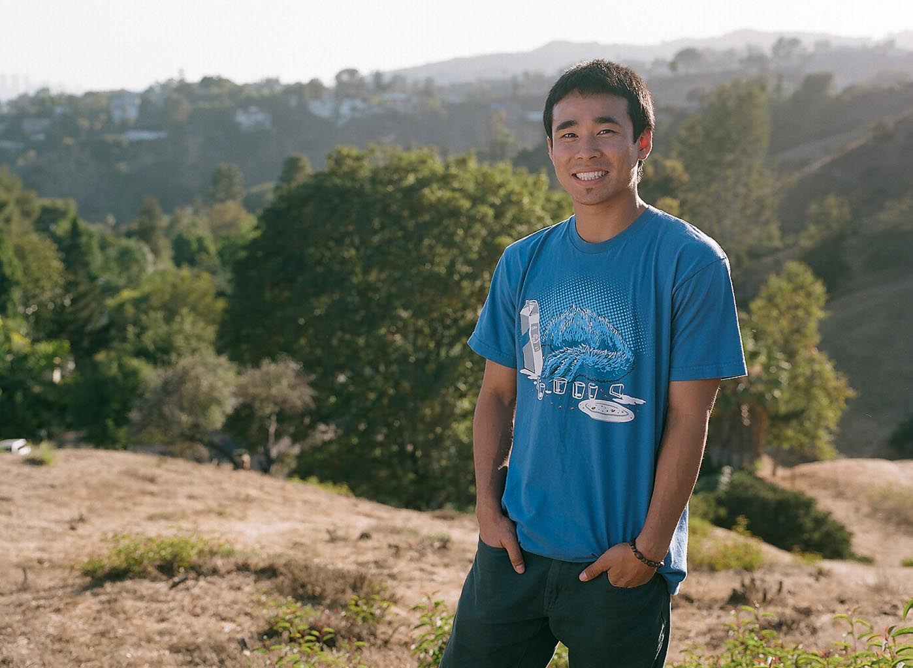

Leo Chan was born in San Francisco and grew up in Oakland California, home of MC Hammer. He graduated from UC Davis with a BA in Economics. His interest in film after UC Davis has led him to become a narrative film editor. It was at BAYCAT where he edited his first short film. Now, he is pursuing his Master's Degree in Producing at AFI Conservatory to further develop his skills as a story teller.